码道交互设计原型集
这里收纳 CodeArts TUI / CLI 交互方案、内置浏览器编辑体验、相关分析探索，以及可复用的沉淀材料。点击卡片可打开对应的 GitHub Pages 页面。
CLI 交互方案
命令、运行模式、代码库索引、LSP 与终端内交互
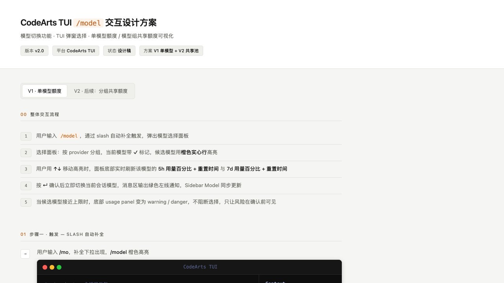
CodeArts TUI /model 交互设计方案
模型切换弹窗、V1 单模型额度、V2 分组共享额度池，以及 5h / 7d 用量可视化。
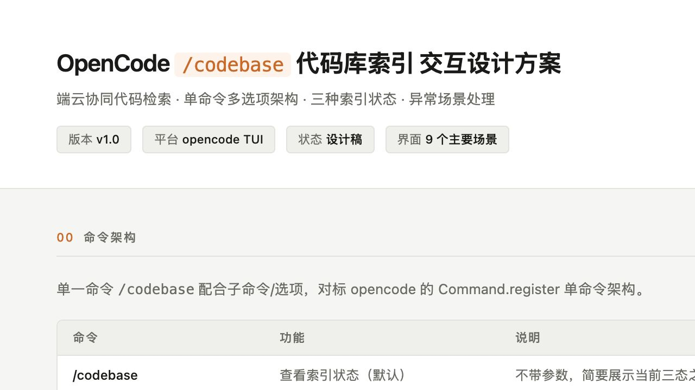
/codebase 代码库索引交互设计
代码库索引状态、初始化、详情展示与云端向量化流程的 TUI 交互方案。
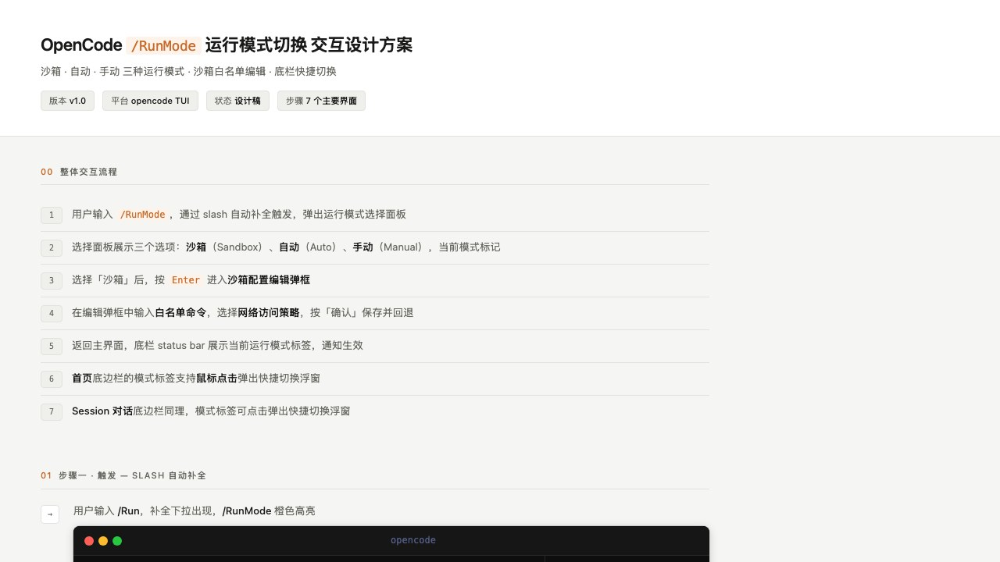
/RunMode 运行模式切换
运行模式选择、命令补全、确认切换与状态反馈的终端交互设计。
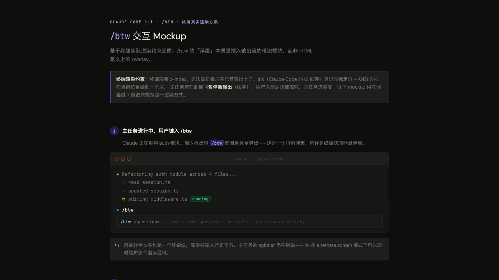
/btw 终端真实渲染 Mockup
终端里临时插话、补充上下文和不中断当前任务流的交互 mockup。
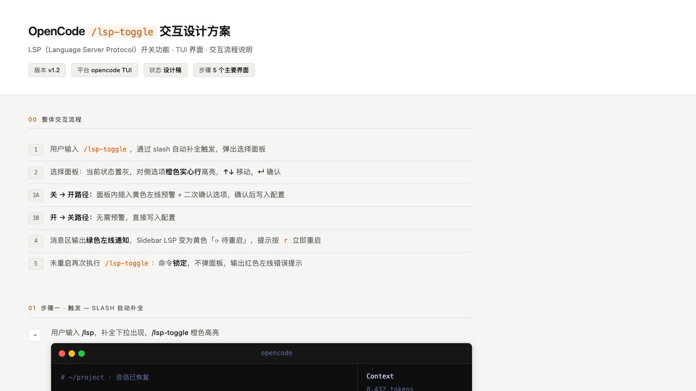
/lsp-toggle 交互设计方案
LSP 开关、二次确认、待重启状态、锁定逻辑与 sidebar 状态汇总。
内置浏览器相关
元素选择、属性编辑、单位输入与浏览器内编辑体验
分析与探索
研究报告、阶段拆解、设计体系与视觉探索
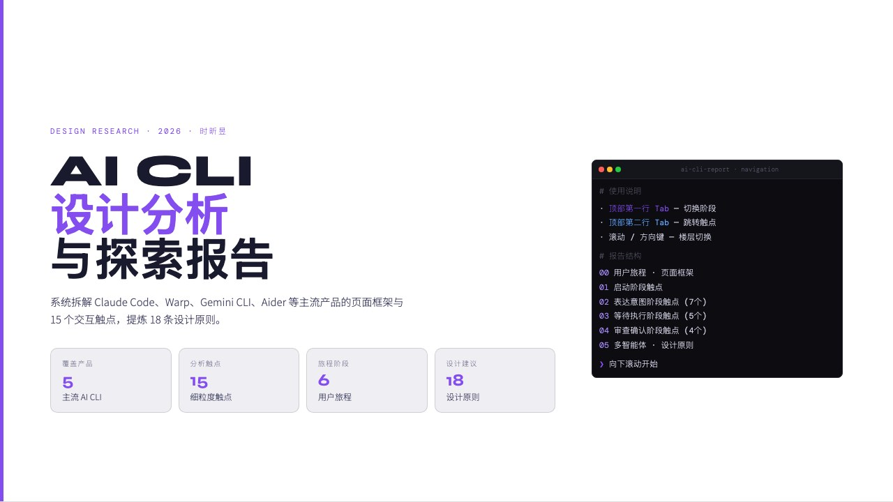
AI CLI 设计报告 · 完整版
系统拆解主流 AI CLI 产品、用户旅程、触点问题与设计原则的完整报告。
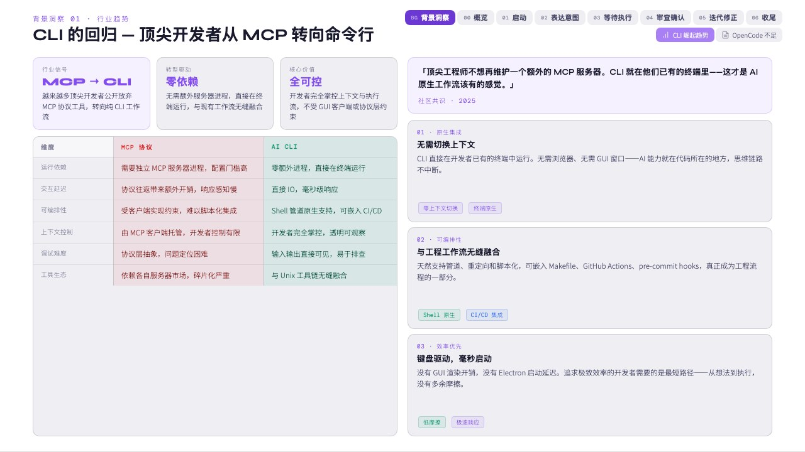
背景洞察
AI CLI 行业趋势、产品差距与机会空间的背景分析。
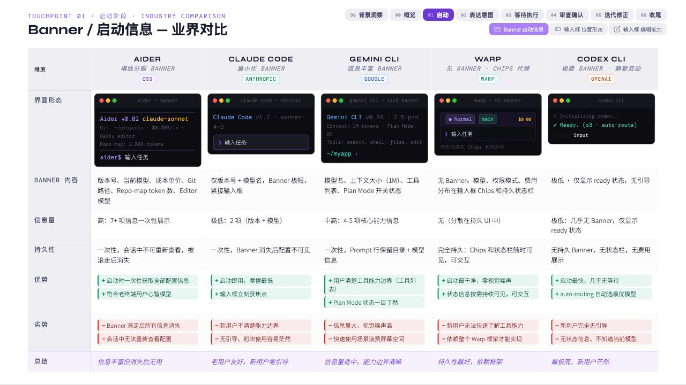
启动阶段触点
从启动、身份确认到初始上下文建立的 CLI 体验触点拆解。
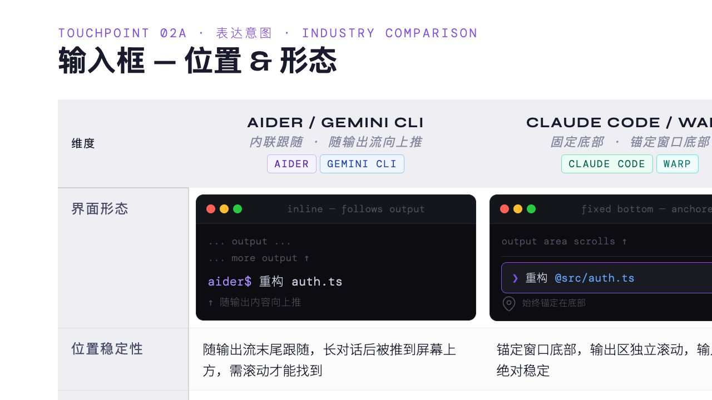
表达意图阶段
命令输入、补全、上下文表达、语音/自然语言等意图输入触点分析。
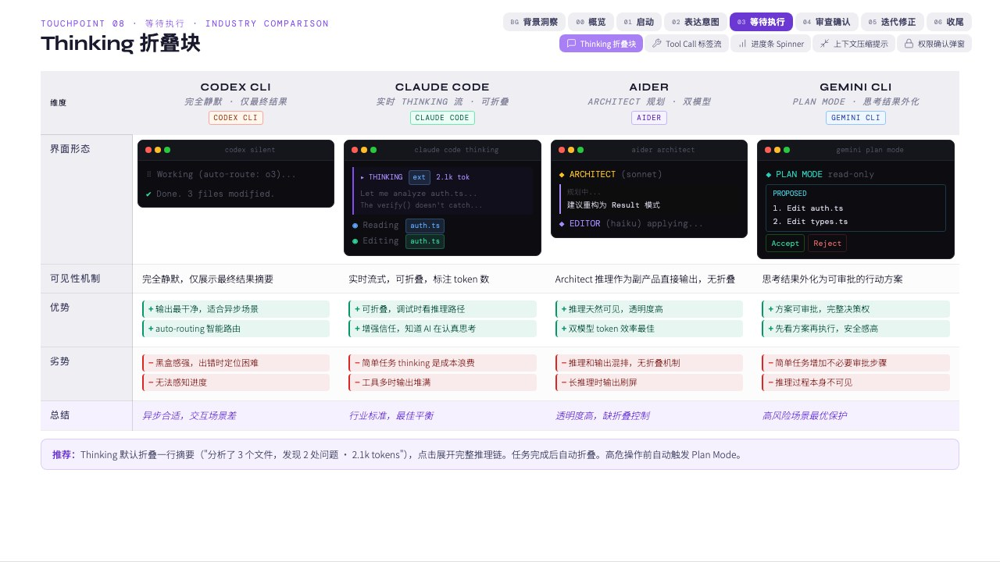
等待执行阶段
任务执行、进度呈现、日志流与用户等待感的体验拆解。
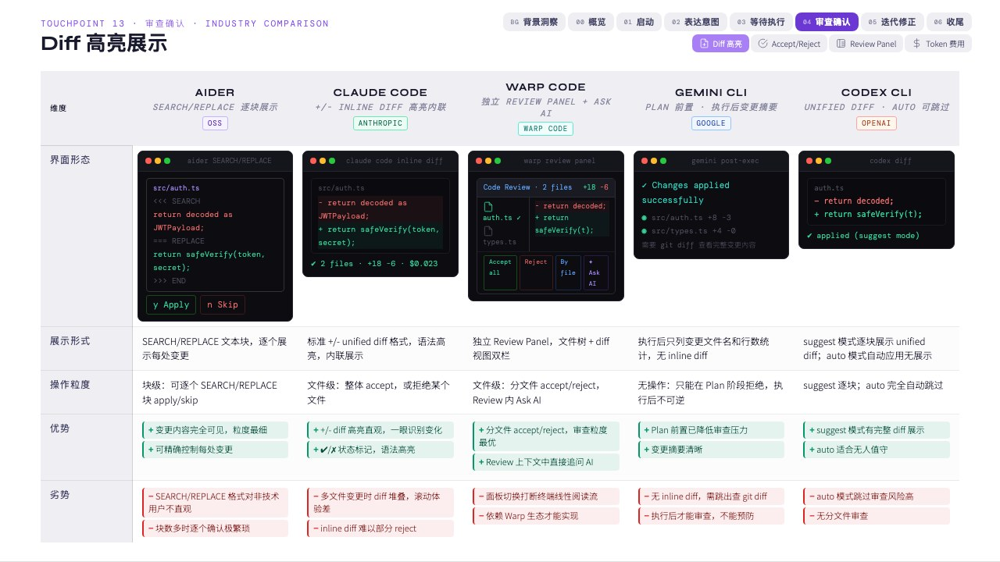
审查确认阶段
变更审查、确认授权、风险提示与 diff 理解的交互分析。
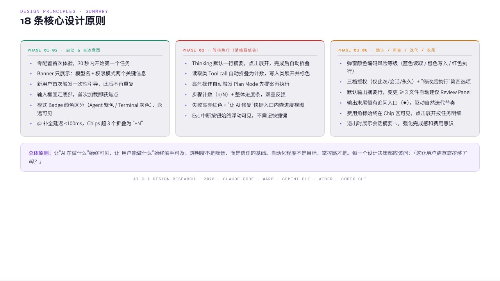
多智能体与设计原则
多任务、多 Agent 编排与设计原则总结。
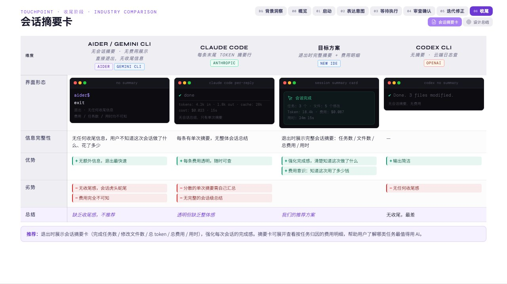
收尾总结
从分析洞察回到产品设计行动的最终总结页。
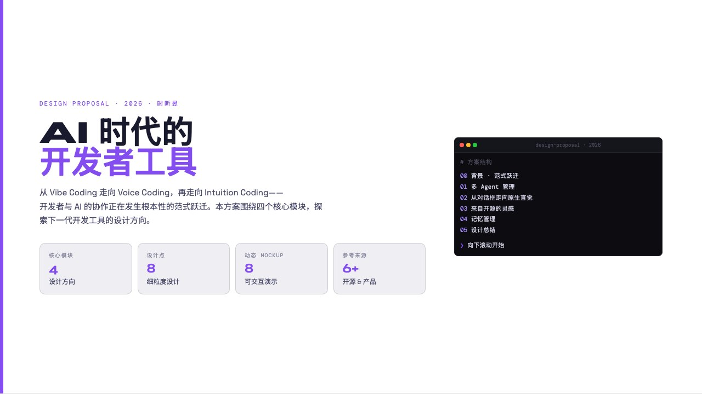
AI 时代的开发者工具
AI 时代开发者工具的设计方案与交互概念演示。
HAI CLI 界面与交互设计体系
CLI 全流程架构、状态栏、输入区、输出流、权限与上下文管理设计体系。
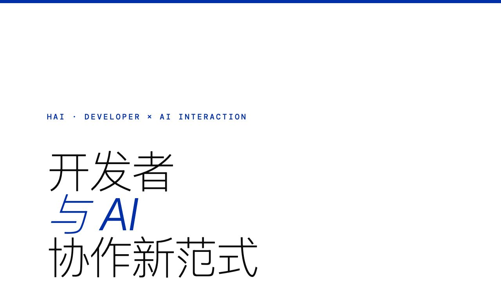
HAI · 开发者 × AI 协作新范式
面向 CANN 昇腾算子开发场景的 AI 协作体验与设计点探索。
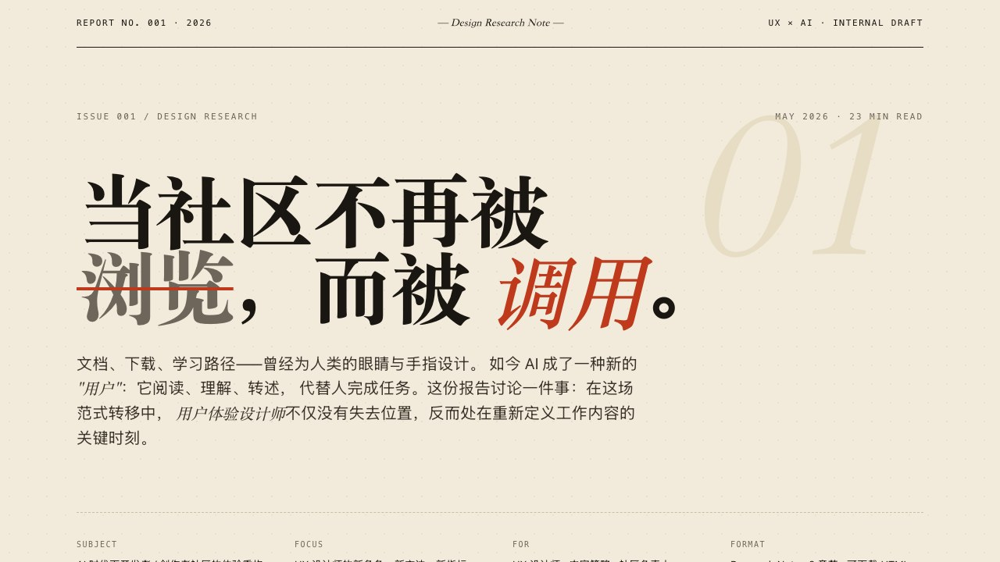
AI 时代下社区的重构
AI 时代社区体验、UX 角色与方法的研究报告。
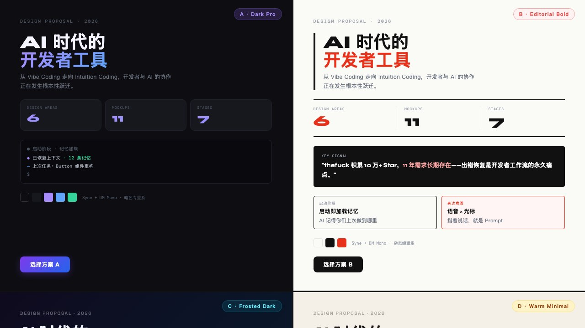
视觉样式方案 · 4 选 1
不同视觉方向的样式探索与方案对比。
Terminal Theme Inspector
终端主题、对比度与色彩可读性的检查工具。
沉淀材料
方法论分享、打印版与可复用归档材料